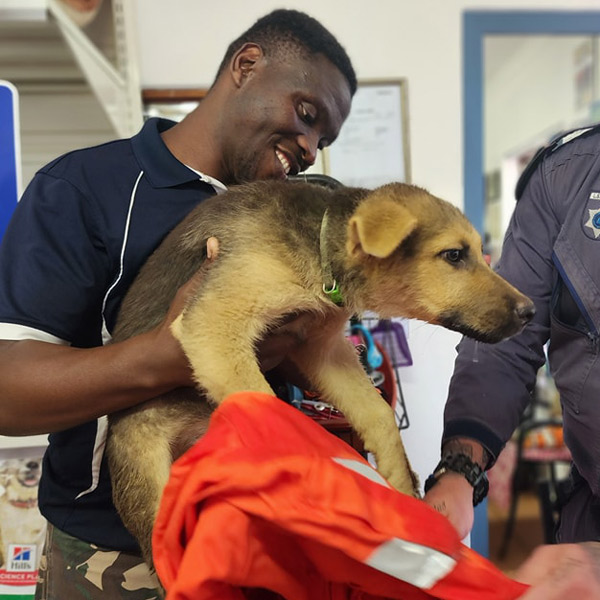
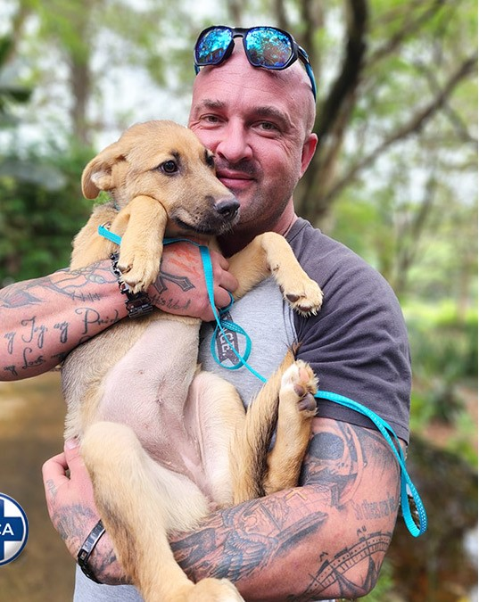

Before

After

🐾 Abused Alfie Enjoys New Farm Life
Inspectorate Story: Alfie
📖 Background
Alfie was brought into the Kloof and Highway SPCA after an Inspector responded to a stray animal call in Pinetown.
💔 Condition
Alfie was thin, dehydrated and suffering from serious injuries.
❤️ Recovery
Through veterinary care, nutrition and rehabilitation Alfie slowly recovered.
🏡 Outcome
Alfie was adopted into a loving family where he now enjoys a happy life.
Help Animals Like Them